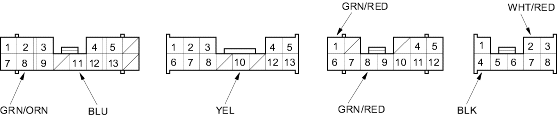
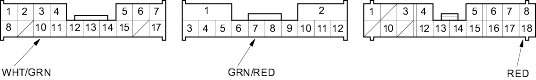
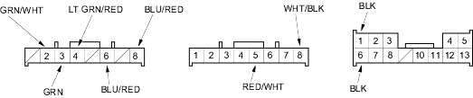

Multiplex Control System
|
22-277 |
| CONNECTOR C (14P) | CONNECTOR E (13P) | CONNECTOR F (12P) | CONNECTOR J (8P) |

| CONNECTOR K (17P) | CONNECTOR O (12P) | CONNECTOR P (18P) |

| CONNECTOR Q (8P) | CONNECTOR X (8P) | CONNECTOR Y (13P) |
